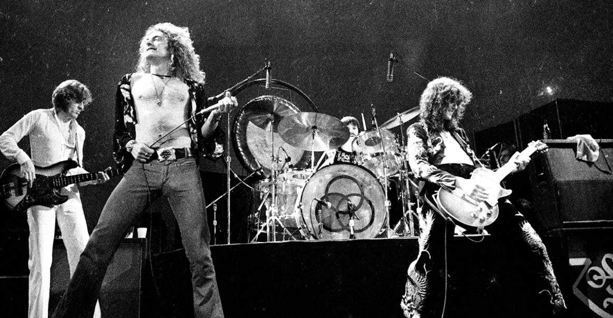
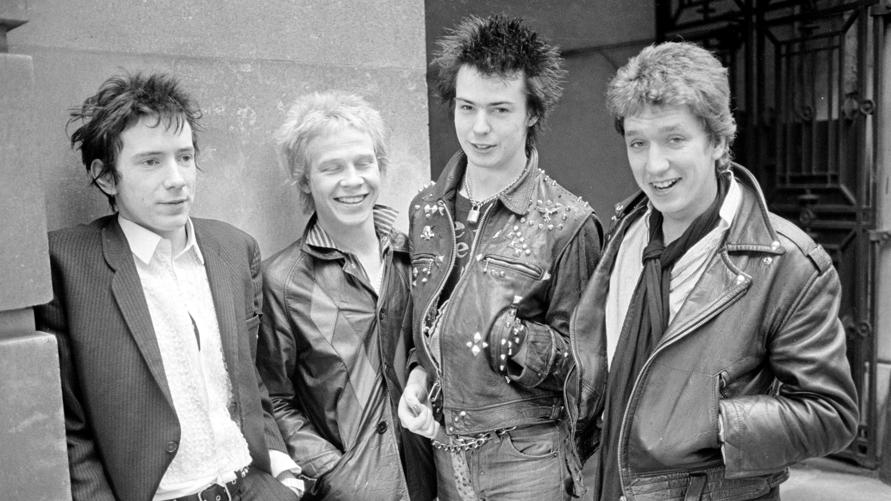

Muzica rock este un gen muzical specific celei de-a doua jumătăți a secolului XX și secolului XXI. Instrumentele muzicale de bază pentru rock sunt chitarele electrice (varianta standard cu șase corzi și chitara bas) și bateria, însă în multe subgenuri se întâlnesc și claviaturi (pian, orgă electronică, sintetizator) sau alte instrumente.
Muzica rock își are rădăcinile în rock and roll-ul anilor '50. A apărut prima oară prin combinarea muzicii country cu blues. Ulterior s-au adăugat și elemente de rhythm and blues. De la început au apărut subgenuri, însă începând cu anii '70 aceste subgenuri s-au înmulțit și mai ales s-au diferențiat foarte mult. Astfel au apărut genurile punk, heavy metal, alternative rock și altele, care la rândul lor au dat naștere unor subgenuri.
Afla Mai Multe Despre
Heavy Metal
Heavy metal (adesea numit simplu metal) este un subgen al muzicii rock apărut la sfârșitul anilor 1960 - începutul anilor 1970, în Marea Britanie. Cu rădăcini în hard rock, blues rock și psychedelic rock, formațiile care au creat genul heavy metal au dezvoltat un sunet gros, masiv, caracterizat de distorsiuni înalt amplificate, pasaje solo de chitară extinse, beat-uri accentuate, și intensitate generală. Versurile și stilurile de interpretare ale heavy metalului sunt adesea asociate cu masculinitatea, agresivitatea și machismo.
Primele formații heavy metal, ca Led Zeppelin, Deep Purple și Black Sabbath au atras audiențe mari, deși acestea au fost adesea ridiculizate de critici, un statut comun în întreaga istorie a genului. La mijlocul anilor 1970 Judas Priest a ajutat stimularea evoluției genului prin eliminarea influenței blues; Motörhead a introdus o sensibilitate punk rock și a sporit accentul pe viteză. Formații din New Wave of British Heavy Metal ca Iron Maiden și Saxon au procedat în aceeași manieră. Înainte de sfârșitul deceniului, fanii heavy metal au devenit cunoscuți ca "metalheazi" sau "headbangeri".
Pe parcursul anilor 1980, glam metal-ul devine o forță comercială prin formații ca Mötley Crüe și Poison. Scenele underground au produs o direcție spre spre stiluri mai extreme și mai agresive: thrash metal a devenit mainstream datorită unor formații ca Metallica, Megadeth, Slayer, și Anthrax, în timp ce alte subgenurilor extreme de metal ca death metal și black metal rămân un fenomen de subcultură. Începând cu mijlocul anilor 1990, stiluri populare ca groove metal (e.g. Pantera) care îmbină extreme metal cu hardcore punk, și nu metal (e.g. Slipknot), care încorporează elemente de grunge și hip hop; și metalcore (e.g. Killswitch Engage), au extins în continuare definirea genului.

Concert Led Zeppelin
Punk
Punk rock-ul este un gen de muzică rock, asociat cu subcultura punk, de tip anti-establishment (împotriva autorității instituționalizate, împotriva convențiilor societății) care a început la mijlocul anilor '70. Precedat de o varietate de muzică „protopunk” din anii '60 și începutul anilor '70, punk rockul s-a dezvoltat între 1974 și 1977 în Statele Unite, Marea Britanie și Australia, unde trupe precum The Ramones, Sex Pistols, sau The Clash au fost recunoscute drept avangardistele acestei mișcări muzicale.
Trupele punk, evitând excesele percepute ale rockului „mainstream” din anii '70, au creat o muzică scurtă, rapidă și dură, cu instrumentație minimă și versuri de multe ori politice sau nihiliste. Subcultura punk, asociată muzicii, se caracterizează prin rebeliune juvenilă, haine specifice, o varietate de ideologii anti-autoritariene și prin atitudine DIY („do it yourself”).
Punk rockul a devenit un fenomen major în Regatul Unit spre sfârșitul anilor '70; popularitatea în lume era însă limitată. De-a lungul anilor '80, forme de punk rock au apărut pe scene din întreaga lume, de multe ori refuzând succesul comercial și asocierea cu cultura mainstream. Până la sfârșitul secolului XX, moștenirea lăsată de punk rock a dus la dezvoltarea mișcării rockului alternativ, și noi trupe de punk rock au popularizat acest gen, la câteva decade după prima lui înflorire.

Formatia Sex Pistols
Rock Alternativ
Rock-ul alternativ (Alternative rock; numit și muzică alternativă, alt-rock sau simplu alternative) este un gen al muzicii rock, apărut în anii 1980 și devenit pe larg popular în anii 1990. Ca gen muzical rock-ul alternativ este alcătuit din mai multe subgenuri care au luat naștere pe scena muzicii independente începând din 1980, precum grunge, britpop, gothic rock și indie pop. Aceste subgenuri sunt unificate prin tributul lor față de stilul punk rock, care a pus bazele muzicii alternative in anii '70. Uneori, "rock alternativ" a fost folosit ca un termen general pentru muzica underground din anii '80, și toată muzica născută din punk rock (inclusiv punk-ul însuși, New Wave, și post-punk). Chiar dacă acest gen este considerat a fi rock, unele din subgenurile sale sunt influențate de muzica folk, reggae, muzica electronică sau jazz.
În timp ce puțini artiști, precum R.E.M. și The Cure au avut succes comercial și au fost recunoscuți la scară largă, multe formații de rock alternativ în anii 1980 își înregistrau creațiile cu ajutorul caselor de discuri independente și erau popularizate prin transmiterea muzicii lor la radio sau prin gura lumii. Odată cu succesul înregistrat de Nirvana și mișcările grunge și britpop la începutul anilor 1990 rock-ul alternativ a intrat pe scena muzicii și astfel multe formații au avut succes.